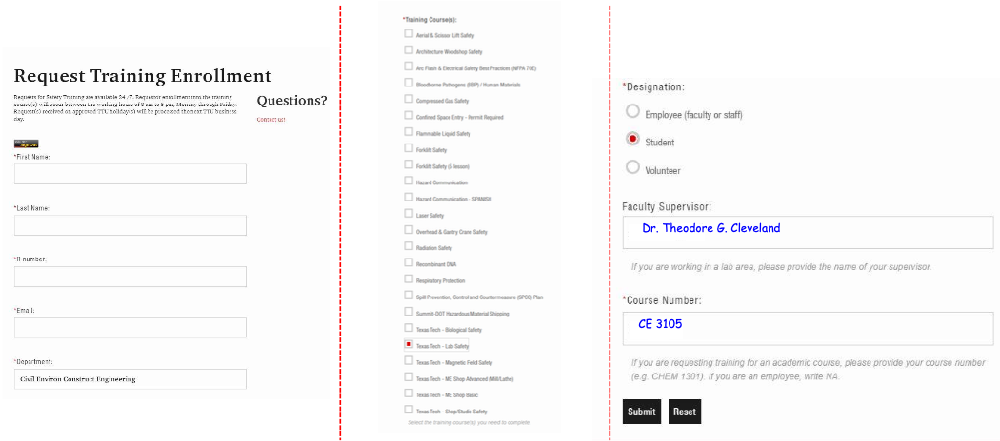

Laboratory Safety¶
Safety is of paramount importance in CE 3105 Fluids Laboratory
Students are required to adhere to all safety protocols and procedures while in the laboratory
Students not adhering to safety procedures or indulging in acts that violate laboratory safety standards will be expelled from the laboratory and may not allowed to participate in future experiments.
Students violating safety rules will be reported to appropriate authorities
Safety violations will also result in academic penalties including receiving a failure grade in the class
Note
Directives issued in the laboratory by the instructor or his/her designee (Teaching Assistant) are to be followed immediately. You can treat the directive the same way as you would follow airline crew instructions. Failure to follow instructions earns you a trip to take the course another semester or at another university.
Laboratory Safety Rules¶
General Principles¶
Students must exercise common sense when handling equipment in the lab.
All CE 3105 experiments deal with water and laboratory equipment run on electricity
Water and electricity don’t mix well
Don’t become a conductor; keep water away from electrical connections
Don’t earn a Darwin award or a spot on Dumb Ways to Die
The 110V single-phase sources are GFI protected; the 220V 3-Phase (the pump performance curve station is not)
Note
Electricity leakage is sometimes detected by a slight tingling when you touch a cord or fitting. If that happens, let go! and tell the instructor or assistant so we can inspect and repair the fitting. Water leakage is going to happen, try to clean up splash and spills, and dont allow ponding to occur
Specific Rules¶
You are required to follow the general principles and specific laboratory safety rules listed below:
The Instructor and Assistants have the final say with regards to safety rules (see the note above)
You are required to follow their instructions
You are required to wear closed toe shoes (No sandals)
You are required to wear full length trousers (no shorts, no skirts, no dresses)
You are required to wear safety goggles as appropriate and when asked to do so
Do not touch/operate equipment until directed to do so by the instructor
No FOOD or DRINK in the Laboratory
Do not enter the laboratory if you are intoxicated
Follow other instructions and guidelines set forth by the instructor
Laboratory Safety Training¶
You MUST complete the mandatory safety training before performing any experiment in the lab
The Mandatory training for CE 3105 includes:
Texas Tech Lab Safety
You need to upload evidence of completion in the Blackboard. There is a folder for uploading your Lab Safety Certificates
You can upload valid certificates if you have taken the training previously for other classes in previous semesters
Your certificate must however be valid till the end of this semester 12/06/2022
Required TTU safety Training is valid for two years from when the certificate was issued
If you are in doubt regarding the validity of your certificate, just retake the training!!
How to Access Training¶
Go to: https://www.depts.ttu.edu/ehs/Training/index.php
Then select “Request Training”

Then complete the form on the web browser with your information as shown below. Select Texas Tech-Lab Safety and submit the form. You will receive an email shortly afterwards with the required link for taking the training.

Upon completion the training site will issue a completion certificate. Upload that certificate to Blackboard by the due date announced on the syllabus or by the instructor/teaching assistant. Failure to complete training will result in removal from the course.